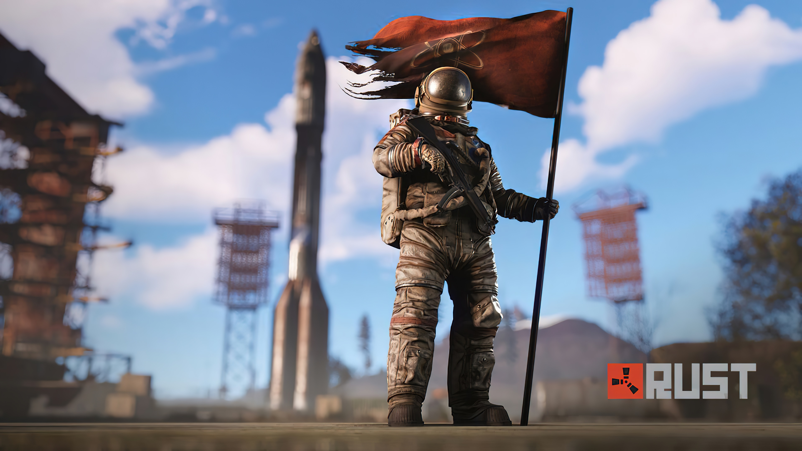
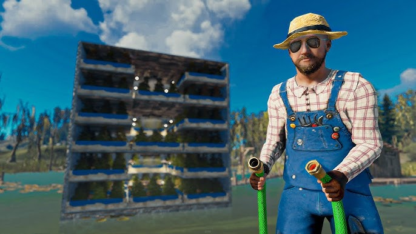
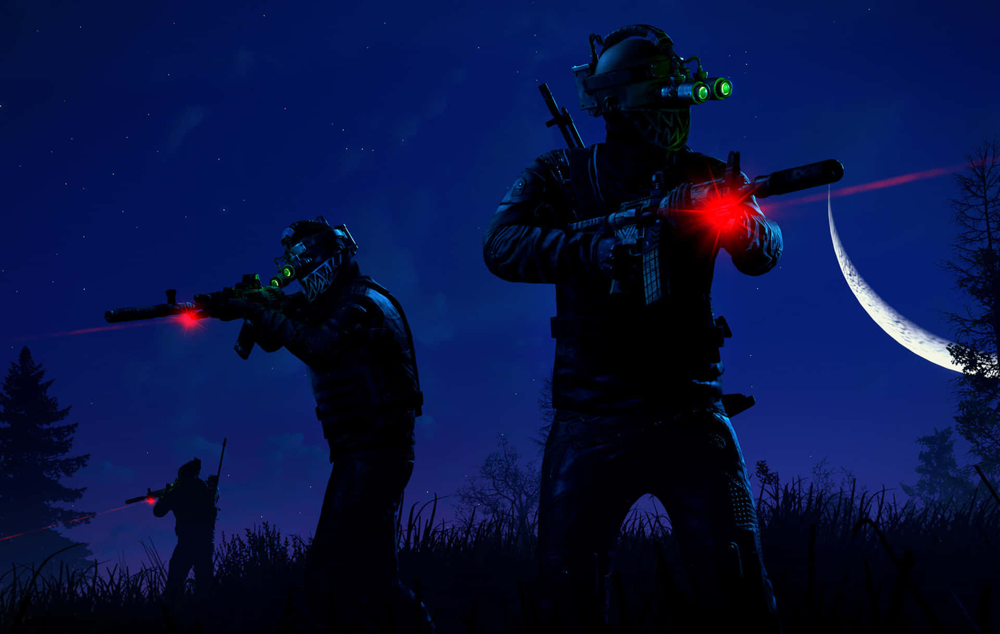

Rust — это суровая игра на выживание, где каждый игрок сам выбирает свой путь.
Вы пока не выбрали любимого персонажа
О игре Rust
Rust — многопользовательская игра в жанре выживания. Игрок появляется в случайной точке карты без ресурсов и должен самостоятельно добывать еду, материалы и оружие.
В игре отсутствуют чёткие правила — можно объединяться, предавать, торговать или нападать на других игроков.
Стили игры
- Фармер — добывает ресурсы и строит базы
- Рейдер — нападает на базы других игроков
- Одиночка — выживает в одиночку
- Командный игрок — играет в клане
Почему Rust популярен
Rust популярен благодаря свободе действий, высокой сложности и постоянному напряжению.
Каждая игровая сессия уникальна, так как всё зависит от решений игроков.

Выживший
Начало пути.

Фармер
Основа команды.

Рейдер
Любитель рейдов.